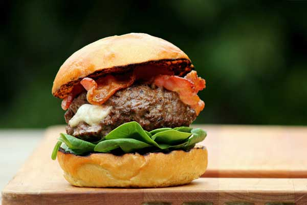

Stuffed Burgers

Photo by Michael Stern
A great homemade burger recipe stuffed with blue cheese.
Serves up to 4 people.

Ingredients
- 1lb ground beef
- pinch or two of oregano
- 1 tsp salt
- black pepper
- 1/2 cup breadcrumbs
- 1 beaten egg
- 2 ounces of whiskey
- 4 slices of blue cheese (or your preference)
Procedure
- Put all the ingredients except the cheese into a large bowl and mix together with your hands.
- Separate the mixture into flat round discs. Place the cheese slices in the centre of 4 of the discs and place the other 4 on top. Gently knead the edges until the two discs are joined together around the edges. Try not to over work the burgers as they will go tough when cooked. Tip: Wet your hands before handling the mixture to prevent it from sticking to you.
- Cook on the grill until juices are no longer pink.
- Serve on a bun with your choice of toppings.